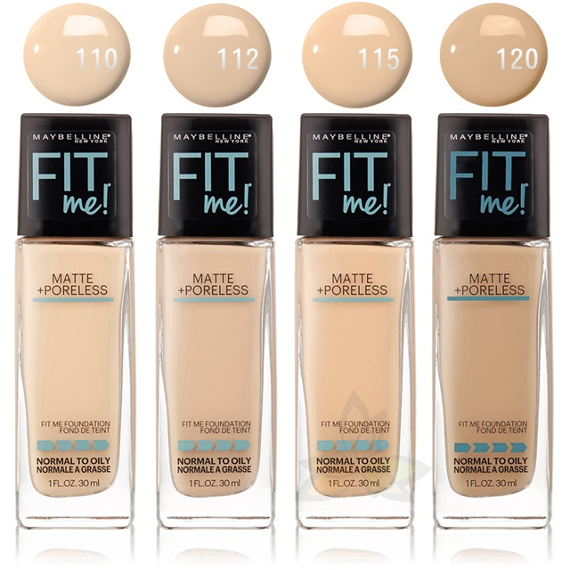
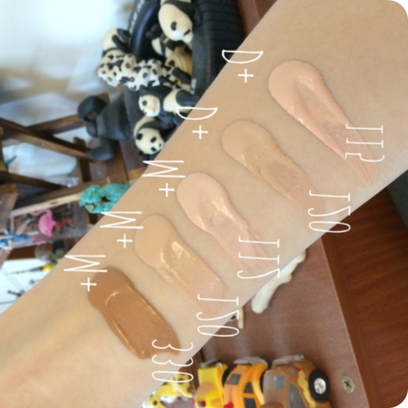
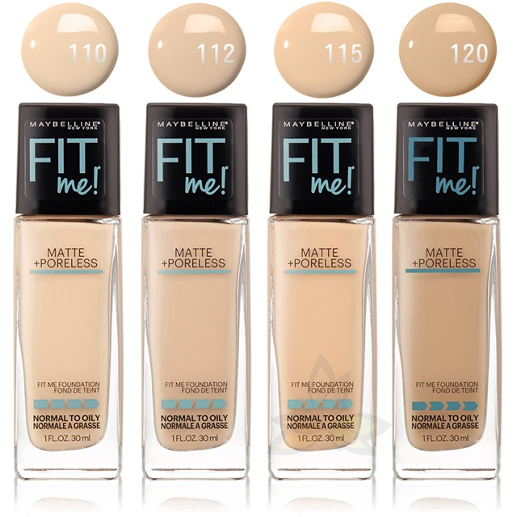
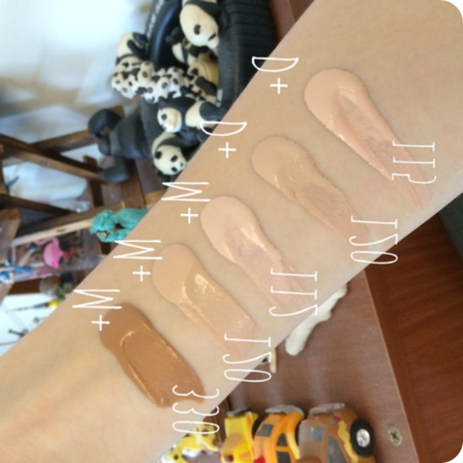

arrow_back
 陳小明
陳小明
22y,,中性膚質
陳小明22y,,中性膚質
追蹤
[選色]Maybelline粉底液色號選擇
2020/12/13 01:25
3255
sentiment_very_satisfied296
12
因為最近天氣越來越熱，我原本使用的粉底液感覺越來越撐不住了。今天去寶雅試了幾個品牌的粉底液，我挑粉底液重點就是希望不會暗沉、持久、不脫妝;因為最近天氣越來越熱，我原本使用的粉底液感覺越來越撐不住了。今天去寶雅試了幾個品牌的粉底液，我挑粉底液重點就是希望不會暗沉、持久、不脫妝;因為最近天氣越來越熱，我原本使用的粉底液感覺越來越撐不住了。今天去寶雅試了幾個品牌的粉底液，我挑粉底液重點就是希望不會暗沉、持久、不脫妝;因為最近天氣越來越熱，我原本使用的粉底液感覺越來越撐不住了。
 後來上網找了試色圖，網路上找到的是色圖大概是長下面這樣(如有侵權請告知~~) ▼ 我在考慮112或115這兩個色號，112好像是偏粉、115是偏黃，我自己膚色是比較中間的，目前偏向112(感覺氣色會比較好)，但還是想問下用過的各位，不知道112這個色號會到很粉嗎?
 後來上網找了試色圖，網路上找到的是色圖大概是長下面這樣(如有侵權請告知~~) ▼ 我在考慮112或115這兩個色號，112好像是偏粉、115是偏黃，我自己膚色是比較中間的，目前偏向112(感覺氣色會比較好)，但還是想問下用過的各位，不知道112這個色號會到很粉嗎?
更多文章